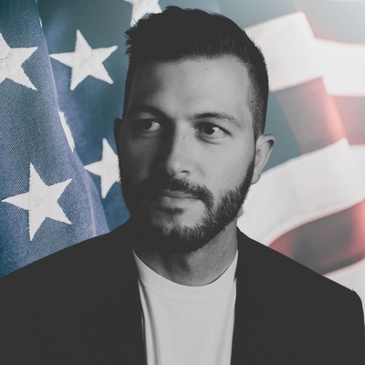
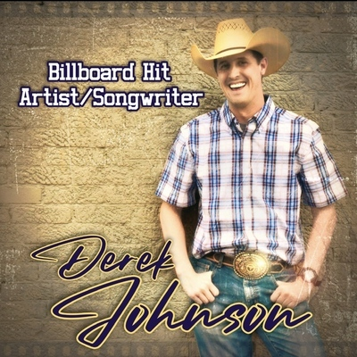
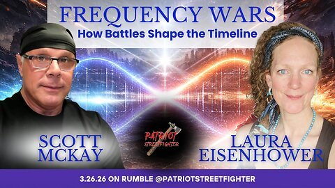
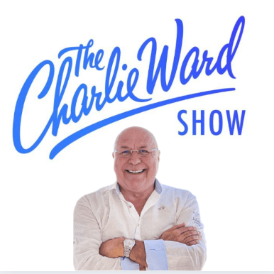
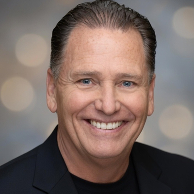
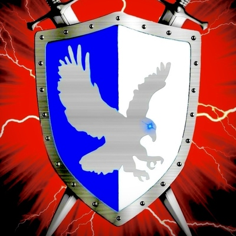
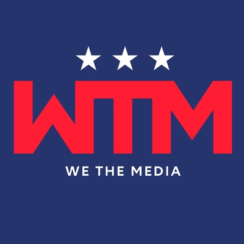
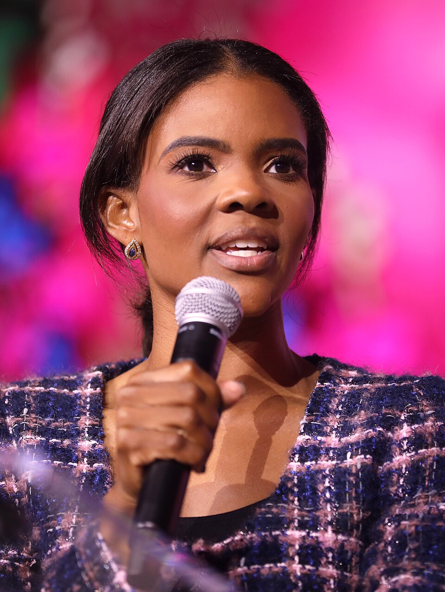
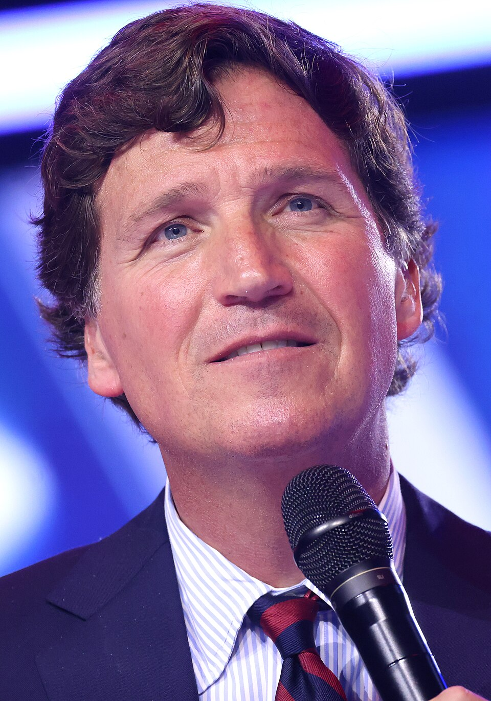
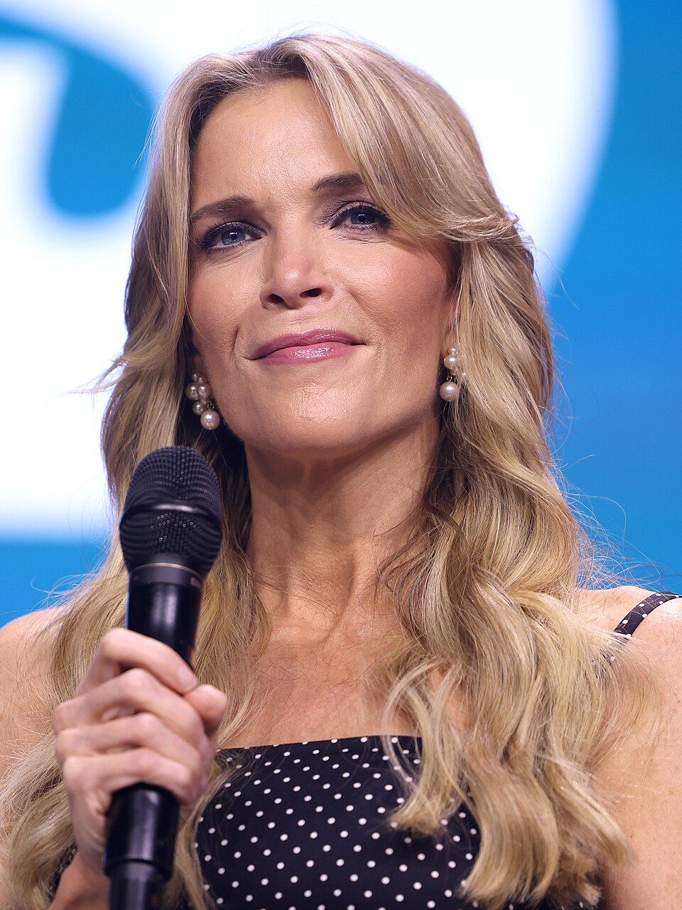

How Conspiracy Became a Business
The conspiracy theory ecosystem is not a disorganized collection of random people sharing ideas. It is a structured industry with a supply chain, revenue models, and distribution networks. Like any industry, it has creators who produce the product, distributors who move it to market, amplifiers who increase demand, and mainstream figures who give it legitimacy. Understanding this structure is the first step to recognizing when you are being sold something disguised as truth.
This chapter maps the conspiracy industry from top to bottom. It names the people involved, explains how the money flows, and shows why the business model depends on the promises never being fulfilled. If the "plan" ever came true, the revenue would stop. The industry needs its audience to keep believing, keep watching, and keep paying.
The Supply Chain
The conspiracy industry operates on a four-tier supply chain. Each tier serves a specific function, and content flows downward from creators to consumers through a network that mirrors legitimate media distribution.
Tier 1: Content Creators
Jon Herold (Patel Patriot) and Derek Johnson (RattleTrap 1776) produce the original theories. These are the people who write the Substack posts, film the video breakdowns, and construct the narratives that everything else is built on. Their work is covered in detail in Chapters 4 and 5 of this site.
Tier 2: Distribution Networks
We The Media, Anon Alliance, and Badlands Media are the Telegram channels and media networks that push content to hundreds of thousands of subscribers. They function as wire services for the conspiracy world, ensuring that a single person's theory reaches a mass audience within hours.
Tier 3: Amplifiers
X22 Report (Dave Fishman), David "Nino" Rodriguez, Scott McKay, Charlie Ward, Dr. Jan Halper-Hayes, Ariel, InTheMatrixxx (Jeff), Michael Jaco, and Kerry Cassidy are the podcasters and video creators who repackage and amplify the theories to their own audiences. Many add their own "insider intel" claims to the mix.
Tier 4: Mainstream Laundering
Candace Owens, Tucker Carlson, and Megyn Kelly are mainstream media figures who give conspiracy-adjacent ideas credibility by platforming them or echoing their themes to audiences of millions. When a mainstream host repeats a conspiracy framework, it stops looking fringe and starts looking like news.
Tier 2: The Distribution Networks
We The Media
We The Media became one of the largest Q-adjacent Telegram channels, aggregating content from dozens of conspiracy creators and pushing it to a massive subscriber base. The channel amplified Jon Herold's devolution series and Derek Johnson's Law of War claims, giving these theories exposure far beyond their original Substack and social media audiences. When Q went silent after the 2020 election, channels like We The Media filled the void by curating content from across the conspiracy industry. They gave followers a reason to keep checking their phones every day, even after Q stopped posting.
We The Media: Known Handles
The We The Media network operates across Truth Social, Telegram, and other platforms. The following handles are associated with the network (Truth Social):
- @WeTheMedia (main account)
- @believemedia (Believe Media)
- @DonnaFussell (We The People Report)
- @USFF45 (We The People)
- @BradCGZ (Where We Go 1 We Go All)
- @seveland69 (We The People)
- @SouthFL45 (We The People)
- @Pony44 (We the People)
Anon Alliance: Known Handles
Anon Alliance was another major aggregation network that cross-posted content across platforms, primarily Telegram but also Truth Social. These networks function like news wire services for the conspiracy world, ensuring that content created by a single person reaches hundreds of thousands of people within hours. Known associated handles on Truth Social include:
- @AnonAlliance (main account)
- @trulyanon (Anon)
- @patriot1620 (Mayflower Anon)
- @AllianceForTrump (Alliance For Trump)
- @QsaveUS (Q ANON)
- @Kanon1745 (K Anon)
- @kathyhartman (Mrs. Anon)
- @kre8or (Jim Anon)
- @grammyanon (Grammy Anon)
- @RebelAlliance (Rebel Alliance)
These are the distribution nodes. A single post from any Tier 1 creator can reach all of these accounts within minutes, and from there it spreads to their individual followers. This is how a theory written by one person in North Dakota reaches hundreds of thousands of Americans by the end of the day.
Badlands Media
Badlands Media was originally part of We The Media before the two split. Jon Herold then founded Badlands as its own operation, and it has since grown into a full media company with a daily show schedule, multiple hosts, and a production infrastructure that broadcasts live on Rumble. What started as a Substack blog became a vertically integrated media operation where Herold controls both the production and distribution of his product.
Badlands Media show lineup (2026):
- Badlands Daily (Mon-Fri, 10am ET): Jon Herold and CannCon
- Devolution Power Hour (Wed and Sat, 10:30pm ET): Jon Herold with Burning Bright (Wed) and Patrick Gunnels (Sat)
- Game Theory (Thu, 12pm ET): Sean Morgan and Burning Bright
- Knowledge Based (Thu, 7:30pm ET): Jordan Sather and Justin Deschamps
- Vigilant News (Mon and Fri, 3pm ET): Justin Deschamps and Ryan DeLarme
- SITREP (Thu, 9pm ET): CannCon and Alpha Warrior
- Breaking History: Matt Ehret and Ghost
- Sports Talk (Mon and Fri, 12pm ET): JB White and Absolute 1776
- Spellbreakers: Matt Trump
- OnlyLands: rotating hosts, late-night live sessions
Notice that Jordan Sather, who promoted drinking bleach as medicine, has a regular show on the network. A person might start watching Devolution Power Hour for devolution content and end up watching Knowledge Based, where Sather covers "esoteric knowledge, hidden technology, and psychological operations." The network structure keeps audiences inside the ecosystem, constantly exposed to new theories and new content creators.
Tier 3: The Amplifiers
The amplifiers are the engine of the conspiracy industry. They take theories created by Tier 1 and distributed by Tier 2 and repackage them for mass consumption. Each amplifier has their own audience, their own style, and their own revenue streams. Together, they reach millions of Americans every week.
These numbers represent individual platforms only. Most of these figures operate across multiple platforms simultaneously, including Rumble, Truth Social, X, Telegram, Substack, and personal websites. Their combined reach across all platforms is in the millions.

Jon Herold
Patel Patriot

Derek Johnson
RattleTrap 1776

Scott McKay
Patriot Streetfighter

Charlie Ward
NESARA/GESARA Fraud

Jeff
InTheMatrixxx
Jordan Sather
Bleach as Medicine

Libertas
@Libertas

We The Media
Distribution Network

Candace Owens
Blood Libel Promoter

Tucker Carlson
Great Replacement

Megyn Kelly
Mainstream Laundering
X22 Report (Dave Fishman)
Dave Fishman is a computer technician from New York. Not a journalist. Not an analyst. Not a government official. A computer tech who figured out that reading Q drops on camera and predicting financial collapse generates massive web traffic. He started X22 Report in 2013 predicting economic crashes that never came. Year after year, month after month, the collapse was always "right around the corner." When Q appeared, Fishman pivoted hard because the audience was bigger and the donations were better. YouTube banned him. Spotify banned him. He moved to Rumble and kept going. Media Bias/Fact Check rates X22 Report as a strong conspiracy and pseudoscience website with very low factual reporting.
Fishman did more damage to the patriot community than almost anyone in the amplifier tier. He told his audience night after night that devolution was real, that the military was in control, that mass arrests were coming. He read Jon Herold's Substack posts on air and presented them as confirmed intelligence. His audience trusted him because he sounded confident and he did it every single day. Consistency is not the same as accuracy, but when someone shows up every night with the same message, people start believing it simply because of repetition. That is not journalism. That is conditioning.
David "Nino" Rodriguez
Nino Rodriguez is a former professional boxer with no intelligence background, no military experience, no government service, and no journalism training. He charges people money to watch him talk about mass arrests, military tribunals, and secret operations that have never happened and will never happen. His followers literally pay per view to hear predictions that do not come true. When those predictions fail, Nino moves the goalposts and charges for the next stream. The pay-per-view model strips away any pretense of public service. This is not a patriot sharing information. This is a man selling tickets to a show where nothing happens.
Nino cross-promotes constantly with Charlie Ward, Scott McKay, and other Tier 3 figures, creating a closed ecosystem where the same audience cycles between shows, hearing the same failed predictions repackaged by different hosts. Each host validates the others. If Charlie Ward says mass arrests are coming and then Nino says it too, the audience believes it must be true because "multiple sources" are confirming it. In reality, it is the same fiction being repeated by people who all profit from the same lie.
Scott McKay ("Patriot Streetfighter")
Scott McKay calls himself "Patriot Streetfighter." He is a former bodybuilder who threatens violence against people he disagrees with. He publicly threatened to put "bullets inside" health care providers. When COVID broke out at his own rally, he did not take responsibility. He blamed it on a "deep state toxin attack." When his own father died from a COVID-related stroke, McKay did not grieve publicly or acknowledge the virus. He vowed "massive retribution" against shadowy forces. His father died, and McKay turned it into content.
The FBI considers the sovereign citizen ideology that McKay promotes to be a domestic terrorist threat. McKay and his followers have threatened retaliation against a Tennessee judge, a district attorney, and TBI agents for doing their jobs. In 2026, McKay continues producing weekly content with guests like Michael Jaco and Kerry Cassidy. His February 2026 show was titled "Natural Weapons System To Defeat Nano Technology Of Transhumanism." That is not patriotism. That is a man who has lost touch with reality and is taking his audience with him.
Charlie Ward
Charlie Ward is not even American. He is a British conspiracy theorist who built his brand by telling Americans that their government has been secretly overthrown and that a global currency reset will make everyone rich. BBC journalist Shayan Sardarizadeh described Ward as one of the most notorious promoters of the Q conspiracy theory, adding that his views are so extreme that even most Q supporters regard him as a pariah. When your views are too extreme for people who believe in secret military operations, that should tell you something.
Ward promotes NESARA/GESARA, a financial fraud scheme that promises a global currency reset and debt forgiveness for everyone. He has been promising this is imminent for years. It has never happened. His followers have publicly asked where the payouts are. The answer is always the same: soon, just keep watching, just keep believing, just keep paying for premium content. A British man with no financial credentials and no government connections is telling Americans that all their debts will be erased if they just trust the plan. And people are sending him money for it.
Dr. Jan Halper-Hayes
Jan Halper-Hayes went on national television and claimed to have insider knowledge about Trump's plans. She offered no evidence. She cited no sources. She produced no documents. But she had "Dr." in front of her name, and that was enough. The conspiracy industry weaponizes credentials. A title makes people lower their guard. They stop asking for proof because they assume someone with a doctorate has already verified the claims. Halper-Hayes provided exactly zero verifiable facts during her television appearances, but her academic title gave millions of viewers permission to believe conspiracy theories they might have otherwise dismissed.
Ariel
Ariel operates on X as one of the amplifier accounts that pushes conspiracy content from dedicated platforms like Telegram and Rumble into the mainstream social media feeds where ordinary Americans spend their time. Accounts like Ariel serve as bridges. They take content that most people would never seek out on their own and put it directly in front of them. The algorithm does the rest. One share from a bridge account can introduce thousands of people to content they never would have encountered otherwise, and once the algorithm notices engagement, it pushes more of the same.
InTheMatrixxx (Jeff)
Jeff, operating under the name InTheMatrixxx, built one of the largest Q "decoder" followings online. His entire business model was reading anonymous 8chan posts and telling people what they supposedly meant. He monetized this through Patreon subscriptions and merchandise. Think about that for a moment. An anonymous person posts cryptic messages on an image board. Jeff reads those messages, invents an interpretation, and charges people a monthly subscription to hear it. The "decoder" model is dependency by design. Followers cannot understand the "truth" on their own. They need Jeff to translate it. And that translation costs money every single month.
Michael Jaco
Michael Jaco claims to be a former Navy SEAL and uses that claim to give conspiracy content the weight of military authority. When Jaco tells his audience that secret military operations are happening behind the scenes, it lands differently than when an anonymous Telegram account says the same thing. The audience thinks: this man served, he knows how these things work, he must have inside information. But serving in the military does not give someone access to classified continuity of government protocols after they leave service. It does not make them an intelligence analyst. It does not mean their conspiracy theories are true. Jaco is a regular guest on Patriot Streetfighter and other Tier 3 shows, where his military background is used as a prop to sell fiction as fact.
Kerry Cassidy
Kerry Cassidy has been running Project Camelot since before Q existed, covering secret space programs, alien disclosure, and government cover-ups. She was in the conspiracy business long before devolution theory was invented. Her integration into the Q and devolution ecosystem shows how the conspiracy industry absorbs existing audiences. People who followed Cassidy for UFO content were introduced to devolution theory and Q through cross-promotion with Scott McKay, Nino Rodriguez, and other Tier 3 amplifiers. The conspiracy industry does not care what you believe, as long as you stay in the ecosystem. Whether you came for UFOs or devolution, the result is the same: you are consuming content, generating revenue, and being radicalized.
Tier 4: Mainstream Laundering
The most dangerous tier in the conspiracy supply chain is the one that makes fringe ideas look normal. Mainstream laundering occurs when media figures with large, established audiences repeat conspiracy-adjacent frameworks without explicitly endorsing the conspiracy itself. This gives millions of people permission to believe ideas they might otherwise dismiss.
Candace Owens
Candace Owens' trajectory is the radicalization pipeline playing out in real time in front of millions of people. She started as a mainstream conservative commentator at Turning Point USA, the organization founded by Charlie Kirk. She was articulate, effective, and built a massive following. Then she joined The Daily Wire in 2021, where she hosted a popular political talk show. So far, a normal conservative media career.
Then came the shift. Owens began making increasingly antisemitic statements, leading The Daily Wire to part ways with her in March 2024. Ben Shapiro, the company's co-founder, called her "evil" and "twisted." But getting fired did not slow her down. It accelerated her descent. She blamed Israel for the September 11 attacks. She promoted the blood libel, the medieval conspiracy theory that Jews kill Christian children at Passover and use their blood in ceremonial matzah. This is not a fringe claim from an anonymous Telegram account. This is a woman with millions of followers repeating a conspiracy theory that was used to justify pogroms and massacres of Jewish people for over 800 years.
Then on September 10, 2025, Charlie Kirk, the man who gave Owens her first national platform, was assassinated at Utah Valley University. He was 31 years old. He was shot while speaking at an outdoor campus debate. Rather than grieve, Owens turned Kirk's murder into content. She launched a multipart video series called "Bride of Charlie," a serialized attack on Erika Kirk, Charlie's widow, who had stepped in to lead Turning Point USA. The premiere episode received nearly five million views. Owens suggested that the FBI, Israel, and even Turning Point staff could be involved in Kirk's assassination. She obtained leaked internal recordings of Erika Kirk and broadcast them on her show. She said police should be questioning the widow.
This is what the radicalization pipeline produces. A woman who started as a mainstream conservative communicator is now promoting blood libel, blaming Israel for 9/11, and attacking the widow of the man who launched her career, all while millions of people watch. The Jewish advocacy organization AJC has warned that Owens' antisemitic rhetoric "poses real risks for American society." The Forward listed her among the right-wing extremists to watch in 2026. And her audience keeps growing because outrage is the most profitable product in the conspiracy industry.
Tucker Carlson
Tucker Carlson amplified the "Great Replacement" theory on the most-watched cable news show in America. While he did not explicitly endorse Q, his framing of "elites" controlling the country, replacing the population, and suppressing truth mirrored Q narratives closely enough that Q followers cited his segments as validation. When the most-watched cable news host echoes your framework, it stops looking like a conspiracy theory and starts looking like news.
Carlson's role in the supply chain is particularly significant because his audience included millions of people who would never visit a Q-related Telegram channel or watch a Rumble livestream. He brought conspiracy-adjacent framing to dinner tables and living rooms across America, and his viewers had no idea they were consuming repackaged conspiracy content because it came from a man in a suit on a major news network.
Megyn Kelly
Megyn Kelly platformed conspiracy figures and gave them access to mainstream audiences. By treating conspiracy-adjacent claims as legitimate topics for debate, mainstream hosts normalize ideas that would otherwise remain on the fringe. The format of the interview itself does the work. When a conspiracy promoter sits across from a mainstream host, the visual message to the audience is that this person and their ideas are worth taking seriously. The host does not need to agree with the guest. The act of platforming is the endorsement.
The Revenue Model
This is not a volunteer operation. The conspiracy industry generates millions of dollars annually. The people at the top of this supply chain are running businesses, and understanding how the money flows reveals why the content never changes and why the promises are never fulfilled.
The product is fear and false hope. The customers are Americans who feel abandoned by institutions and are looking for answers. And the business model requires that the answers never actually arrive, because the moment the "plan" is fulfilled, the revenue stops. If mass arrests happened tomorrow, there would be no reason to subscribe to the Devolution Power Hour next week. If the military tribunals materialized, there would be no need to buy the next pay-per-view stream. The conspiracy industry is a subscription service for a product that will never be delivered.
Known Conspiracy Content Creators and Amplifiers
The following individuals have built audiences and revenue streams by promoting conspiracy theories, failed predictions, and unverified claims presented as insider intelligence. This list is not exhaustive. New accounts appear regularly as old ones are banned or lose credibility. If someone is charging you money for "intel" about secret military operations, they belong on this list.
| Name / Handle | Platform | Known For |
|---|---|---|
| Jon Herold (Patel Patriot) | Substack, Badlands Media, Truth Social | Devolution theory creator. 25-part series. Admitted "devolution phase over" Jan 2025. Still running Devolution Power Hour. |
| Derek Johnson (RattleTrap 1776) | Truth Social, Rumble | Law of War theory. Claims military government is running the U.S. Stole devolution concept and repackaged it. 14S National Guard, no TS clearance. |
| Dave Fishman (X22 Report) | Rumble (810K), X, Truth Social | Daily conspiracy podcast since 2013. Predicted economic collapse for 10+ years. Major devolution amplifier. |
| Scott McKay (Patriot Streetfighter) | Rumble (237K), Telegram | Violent rhetoric. Threatened healthcare workers. Blamed COVID at his own rally on deep state. Promotes sovereign citizen ideology. |
| Charlie Ward (Dr. Charlie Ward) | Rumble, Telegram | NESARA/GESARA financial fraud. Promises global currency reset for years. British national. Even Q supporters call him a pariah. |
| David Rodriguez (Nino) | Pay-per-view, Rumble | Former boxer. Charges money for conspiracy content. Promotes mass arrests and tribunals that never happen. |
| Jan Halper-Hayes | Television, X | Used "Dr." title to give conspiracy theories academic credibility on national TV. No verifiable insider knowledge. |
| Jeff (InTheMatrixxx) | X (178K), Patreon | Q "decoder." Built paid subscription business reading anonymous 8chan posts and inventing interpretations. |
| Michael Jaco | Rumble, Telegram | Claims former Navy SEAL background. Uses military credentials to sell conspiracy content as insider knowledge. |
| Kerry Cassidy (Project Camelot) | Rumble, YouTube | Secret space programs, alien disclosure. Pre-dates Q movement. Cross-promotes with McKay and Nino. |
| Jordan Sather | X, Telegram | Early Q promoter. Anti-vaccine content. Promotes miracle mineral supplement (bleach) as medicine. |
| David Hayes (Praying Medic) | X, Telegram | Q "decoder" who framed Q drops as divine prophecy. Published books interpreting Q. |
| Zak Paine (RedPill78) | Rumble, X | Q promoter and amplifier. Election denial content. |
| Robert Smart (GhostEzra) | Telegram | One of the most followed Q influencers. Open neo-Nazi who praises Hitler. Hundreds of thousands of followers. |
| Michael Protzman (Negative48) | Telegram | Led followers to Dallas in Nov 2021 to await JFK Jr.'s return. Followers camped for weeks. He died in 2023 from injuries in an accident. |
| Juan O'Savin | Rumble, Telegram | Claims insider government knowledge. Co-founded America First Secretary of State Coalition. No verified credentials. |
| Simon Parkes | YouTube, Rumble | British politician who claims alien contact. Promotes secret military operations. Collaborates with Charlie Ward. |
| Mel Q | X, Telegram | Prominent Q amplifier account. Shares and promotes Q-adjacent conspiracy content. |
| Craig Longley (IET) | Telegram | Q promoter known for antisemitic content. |
| Ariel | X | Amplifier account bridging conspiracy content from Telegram to mainstream social media. |
| We The Media | Telegram | Major Q-adjacent aggregation channel. Pushed devolution and Law of War content to mass audiences. |
| Anon Alliance | Telegram, cross-platform | Content aggregation network. Cross-posted conspiracy content across platforms. |
| Candace Owens | YouTube, X, Podcast | Mainstream-to-extremist pipeline. Fired from Daily Wire for antisemitism. Promotes blood libel. Targets Charlie Kirk's widow. |
Why It Works
The conspiracy industry exploits real grievances. Americans are right to be frustrated with government corruption, media bias, corporate influence, and institutional failures. Those are real problems that deserve real solutions. But the conspiracy industry does not offer solutions. It offers narratives that feel like solutions while actually making the problems worse.
Every hour spent waiting for "the storm" is an hour not spent on local politics, community organizing, or holding actual officials accountable. Every dollar spent on a pay-per-view conspiracy stream is a dollar not donated to a local campaign or a community organization. Every share of a conspiracy theory is a share that could have been a link to a city council meeting, a school board agenda, or a voter registration drive.
The conspiracy industry does not want you engaged in your community. It wants you engaged with its content. Engaged citizens who attend town halls and vote in local elections are a threat to corrupt officials. Citizens who sit at home watching livestreams about secret military operations are not a threat to anyone. The conspiracy industry pacifies the very people who should be the most active in fixing the problems they are angry about.
Sources: Their Own Words and Platforms
- X22 Report on Rumble (810K followers, direct source)
- Patriot Streetfighter on Rumble (237K followers, direct source)
- Jon Herold on Truth Social (180K followers, direct source)
- Derek Johnson on Truth Social (110K followers, direct source)
- Patel Patriot's Devolution Series (Substack, direct source)
Conservative Sources Calling Them Out
- Ben Shapiro calls Candace Owens "evil" (The Ben Shapiro Show / JFeed)
- Hollywood Reporter: Owens' "Bride of Charlie" series targeting Kirk's widow
- American Jewish Committee: Why Owens' Rhetoric Poses Real Risks
- The Forward: Right-wing extremists to watch in 2026